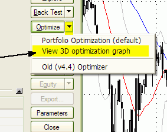
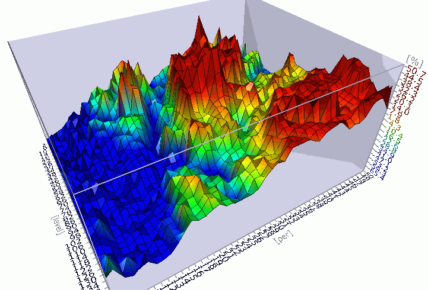
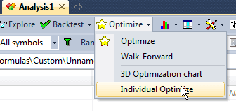

NOTE: This is a fairly advanced topic. Please read previous AFL tutorials first.
Introduction
The idea behind an optimization is simple. First, you need to have a trading system; this may be a simple moving average crossover, for example. In almost every system, there are some parameters (such as the averaging period) that decide how a given system behaves (i.e., whether it is well suited for the long term or short term, how it reacts to highly volatile stocks, etc.). Optimization is the process of finding the optimal values of those parameters (giving the highest profit from the system) for a given symbol (or a portfolio of symbols). AmiBroker is one of the very few programs that allow you to optimize your system on multiple symbols at once.
To optimize your system, you have to define from one up to 64 parameters to be optimized. You decide what the minimum and maximum allowable value of the parameter is and in what increments this value should be updated. AmiBroker then performs multiple backtests of the system using ALL possible combinations of parameter values. When this process is finished, AmiBroker displays the list of results sorted by net profit. You can see the values of optimization parameters that give the best result.
Writing AFL formula
Optimization in the backtester is supported via a new function called optimize. The syntax of this function is as follows:
variable = optimize( "Description", default, min, max, step );
where:
variable - is a normal AFL variable that gets assigned the value returned by
the optimize function.
With normal backtesting, scanning, exploration, and commentary modes, the optimize
function returns the default value, so the above function call is equivalent
to: variable = default;
In optimization mode, the optimize function returns successive values from min to max (inclusively) with step stepping.
"Description" is a string that is used to identify the optimization variable and is displayed as a column name in the optimization result list.
default is a default value that the optimize function returns in exploration, indicator, commentary, scan, and normal backtest modes
min is the minimum value of the variable being optimized
max is the maximum value of the variable being optimized
step is an interval used for increasing the value from min to max
Notes:
Examples
1. Single variable optimization:
sigavg = Optimize( "Signal
average", 9, 2, 20, 1 );
Buy = Cross( MACD( 12, 26 ), Signal( 12, 26,
sigavg ) );
Sell = Cross( Signal( 12, 26,
sigavg ), MACD( 12, 26 )
);
2. Two-variable optimization (suitable for 3D charting)
per = Optimize("per", 2, 5, 50, 1 );
Level = Optimize("level", 2, 2, 150, 4 );
Buy=Cross( CCI(per),
-Level );
Sell = Cross(
Level, CCI(per) );
3. Multiple (3) variable optimization:
mfast = Optimize( "MACD
Fast", 12, 8, 16, 1 );
mslow = Optimize("MACD
Slow", 26, 17, 30, 1 );
sigavg = Optimize( "Signal
average", 9, 2, 20, 1 );
Buy = Cross( MACD(
mfast, mslow ) , Signal(
mfast, mslow, sigavg ) );
Sell = Cross( Signal(
mfast, mslow, sigavg ), MACD(
mfast, mslow ) );
After entering the formula, just click on the Optimize button in the "Automatic Analysis" window. AmiBroker will start testing all possible combinations of optimization variables and report the results in the list. After optimization is done, the list of results is presented sorted by the Net % profit. As you can sort the results by any column in the result list, it is easy to get the optimal values of parameters for the lowest drawdown, lowest number of trades, largest profit factor, lowest market exposure, and highest risk-adjusted annual % return. The last columns of the result list present the values of optimization variables for a given test.
When you decide which combination of parameters suits your needs the best, all you need to do is replace the default values in the optimize function calls with the optimal values. At the current stage, you need to type them by hand in the formula edit window (the second parameter of the optimize function call).
Displaying 3D animated optimization charts
To display a 3D optimization chart, you need to run two-variable optimization first. Two-variable optimization needs a formula that has 2 Optimize() function calls. An example two-variable optimization formula looks like this:
After entering the formula, you need to click the "Optimize" button. Once optimization is complete, you should click on the drop-down arrow on the Optimize button and choose View 3D optimization graph. In a few seconds, a colorful three-dimensional surface plot will appear in a 3D chart viewer window. An example 3D chart generated using the above formula is shown below. |
 |

By default, the 3D charts display values of Net profit against optimization variables. You can, however, plot a 3D surface chart for any column in the optimization result table. Just click on the column header to sort it (a blue arrow will appear, indicating that optimization results are sorted by the selected column) and then choose View 3D optimization graph again.
By visualizing how your system's parameters affect trading performance, you can more readily decide which parameter values produce "fragile" and which produce "robust" system performance. Robust settings are regions in the 3D graph that show gradual rather than abrupt changes in the surface plot. 3D optimization charts are a great tool to prevent curve-fitting. Curve-fitting (or over-optimization) occurs when the system is more complex than it needs to be, and all that complexity is focused on market conditions that may never happen again. Radical changes (or spikes) in the 3D optimization charts clearly show over-optimization areas. You should choose a parameter region that produces a broad and wide plateau on a 3D chart for your real-life trading. Parameter sets producing profit spikes will not work reliably in real trading.
3D chart viewer controls
AmiBroker's 3D chart viewer offers total viewing capabilities with full graph rotation and animation. Now you can view your system results from every conceivable perspective. You can control the position and other parameters of the chart using the mouse, toolbar, and keyboard shortcuts, whatever you find easier. Below, you will find the list.
Mouse controls:
- to Rotate - hold down the LEFT mouse button and move in X/Y directions
- to Zoom-in, zoom-out - hold down the RIGHT mouse button and move in X/Y directions
- to Move (translate) - hold down the LEFT mouse button and CTRL key and move in
X/Y directions
- to Animate - hold down the LEFT mouse button, drag quickly, and release the button
while dragging
Keyboard controls:
SPACE - animate (auto-rotate)
LEFT ARROW KEY - rotate vert. left
RIGHT ARROW KEY - rotate vert. right
UP ARROW KEY - rotate horiz. up
DOWN ARROW KEY - rotate horiz. down
NUMPAD + (PLUS) - Near (zoom in)
NUMPAD - (MINUS) - Far (zoom out)
NUMPAD 4 - move left
NUMPAD 6 - move right
NUMPAD 8 - move up
NUMPAD 2 - move down
PAGE UP - water level up
PAGE DOWN - water level down
Smart (non-exhaustive) optimization
Introduction
AmiBroker now offers smart (non-exhaustive) optimization in addition to regular, exhaustive search. Non-exhaustive search is useful if the number of all parameter combinations of a given trading system is simply too large to be feasible for exhaustive search.
Exhaustive search is perfectly fine as long as it is reasonable to use
it. Let's say you have 2 parameters, each ranging from 1 to 100 (step 1).
That's 10,000 combinations - perfectly OK for exhaustive search.
Now with 3 parameters, you get 1 million combinations - it is still OK for exhaustive
search (but can be lengthy). With 4 parameters, you have 100 million combinations, and with 5 parameters (1..100), you have 10 billion combinations.
In that case, it would be too time-consuming to check all of them,
and this is the area where non-exhaustive smart search methods can solve
the problem that is not solvable in reasonable time using exhaustive search.
Quick Start
Here is absolutely the simplest instruction on how to use the new non-exhaustive optimizer (in this case, CMA-ES).
1. Open your formula in the Formula Editor
2. Add this single line at the top of your formula:
OptimizerSetEngine("cmae"); // you can also use "spso" or "trib" here
3. (Optional) Select your optimization target in Automatic Analysis, Settings, "Walk-Forward" tab, Optimization target field. If you skip this step, it will optimize for CAR/MDD (compound annual return divided by maximum % drawdown).
and... that's it.
Now if you run optimization using this formula, it will use new evolutionary (non-exhaustive) CMA-ES optimizer.
How does it work ?
The optimization is the process of finding the minimum (or maximum) of a given function.
Any trading system can be considered as a function of a certain number of arguments.
The inputs
are parameters and quotation data; the output is your optimization target
(say CAR/MDD). And you are looking for the maximum of the given function.
Some smart optimization algorithms are based on nature (animal behavior) - PSO algorithm,
or biological processes - Genetic algorithms;
and some are based on mathematical concepts derived by humans - CMA-ES.
These algorithms are used in many different areas, including finance. Enter "PSO finance" or "CMA-ES finance" in Google, and you will find lots of info.
Non-exhaustive (or "smart") methods will find a global or local
optimum.
The goal is, of course, to find the global one, but if there is a single sharp peak
out of zillions of parameter combinations, non-exhaustive methods may fail
to find this single peak. However, taking it from a trader's perspective, finding a single
sharp peak
is useless for trading because that result would be unstable (too fragile)
and
not replicable in real trading. In the optimization process, we are rather looking
for plateau regions with stable parameters, and this is the area where intelligent
methods shine.
As to the algorithm used by non-exhaustive search, it looks as follows:
a) The optimizer generates some (usually random) starting population of parameter
sets
b) A backtest is performed by AmiBroker for each parameter set from the population
c) The results of backtests are evaluated according to the logic of the algorithm,
and a new population is generated based on the evolution of results,
d) If a new best is found - save it and go to step b) until stop criteria are
met
Example stop criteria can include:
a) Reaching a specified maximum number of iterations
b) Stop if the range of the best objective values of the last X generations is zero
c) Stop if adding a 0.1 standard deviation vector in any principal axis direction
does not change the value of the objective function
d) others
To use any smart (non-exhaustive) optimizer in AmiBroker, you need to specify the optimizer engine you want to use in the AFL formula using the OptimizerSetEngine function.
OptimizerSetEngine("name")
The function selects an external optimization engine defined by name. AmiBroker currently ships with 3 engines: Standard Particle Swarm Optimizer ("spso"), Tribes ("trib"), and CMA-ES ("cmae") - the names in braces are to be used in OptimizerSetEngine calls.
In addition to selecting an optimizer engine, you may want to set some of its internal parameters. To do so, use the OptimizerSetOption function.
OptimizerSetOption("name", value ) function
The function sets additional parameters for an external optimization engine. The
parameters are engine-dependent.
All three optimizers shipped with AmiBroker (SPSO, Trib, CMAE) support two
parameters: "Runs" (number
of runs) and "MaxEval" (maximum
evaluations (tests) per single run). The behavior of each parameter is engine-dependent,
so the same values may and usually will yield different results with different
engines used.
The difference between Runs and MaxEval is as follows: Evaluation (or test)
is a single backtest (or evaluation of the objective function value).
A RUN is one full run of the algorithm (finding the optimum value) - usually involving
many tests (evaluations).
Each run simply RESTARTS the entire optimization process from a new beginning
(a new initial random population).
Therefore, each run may lead to finding a different local max/min (if it does
not find the global one). So, the Runs parameter defines the number of subsequent algorithm
runs. MaxEval is the maximum number of evaluations (backtests) in any single
run.
If the problem is relatively simple and 1000 tests are enough to find the global
max, 5x1000 is more likely to find the global maximum
because there are fewer chances to be stuck in a local max, as subsequent runs
will start from a different initial random population
Choosing parameter values can be tricky. It depends on the problem under test, its complexity, etc.
Any stochastic non-exhaustive method does not give you a guarantee of finding the
global max/min, regardless of the number of tests if it is smaller
than an exhaustive search. The easiest answer is to: specify as large a number of tests
as is reasonable for you in terms of time required to complete.
Another simple piece of advice is to multiply the number of tests by 10 when adding
a new dimension. That may lead to overestimating the number
of tests required, but it is quite safe.
Shipped engines are designed to be simple to use; therefore, "reasonable" default/automatic
values are used, so optimization can usually be run without specifying anything (accepting defaults).
Caveat
It is important to understand that all smart optimization methods work best in continuous parameter spaces and with relatively smooth objective functions. If the parameter space is discrete, evolutionary algorithms may have trouble finding the optimum value. It is especially true for binary (on/off) parameters - they are not suited for any search method that uses the gradient of objective function change (as most smart methods do). If your trading system contains many binary parameters, you should not use a smart optimizer directly on them. Instead, try to optimize only continuous parameters using a smart optimizer, and switch binary parameters manually or via an external script.
SPSO - Standard Particle Swarm Optimizer
Standard Particle Swarm Optimizer is based on SPSO2007 code that is supposed
to produce
good results, provided that the correct parameters (i.e., Runs, MaxEval) are provided
for a particular problem.
Picking the correct options for the PSO optimizer can be tricky; therefore, results
may significantly vary from case to case.
SPSO.dll comes with full source codes inside the "ADK" subfolder.
Example
code for Standard Particle Swarm Optimizer: (finding the optimum value in 1000 tests within a search space of 10,000 combinations)
OptimizerSetEngine("spso");
OptimizerSetOption("Runs", 1 );
OptimizerSetOption("MaxEval", 1000 );
sl = Optimize("s", 26, 1, 100, 1 );
fa = Optimize("f", 12, 1, 100, 1 );
Buy = Cross( MACD( fa, sl ), 0 );
Sell = Cross( 0, MACD( fa, sl ) );
TRIBES - Adaptive Parameterless Particle Swarm Optimizer
Tribes is an adaptive, parameterless version of the PSO (particle swarm optimization)
non-exhaustive optimizer.
For scientific background see:
http://www.particleswarm.info/Tribes_2006_Cooren.pdf
In theory, it should perform better than regular PSO because it can automatically adjust the swarm sizes and algorithm strategy to the problem being solved.
Practice shows that its performance is quite similar to PSO.
The Tribes.DLL plugin implements the "Tribes-D" (i.e., dimensionless) variant. Based on http://clerc.maurice.free.fr/pso/Tribes/TRIBES-D.zip by Maurice Clerc. Original source codes used with permission from the author.
Tribes.DLL comes with full source code (inside "ADK" folder)
Supported parameters:
"MaxEval" - maximum number of evaluations (backtests) per run (default
= 1000).
OptimizerSetOption("MaxEval", 1000 );
You should increase the number of evaluations with an increasing number of dimensions
(number of optimization params).
The default of 1000 is good for 2 or a maximum of 3 dimensions.
"Runs" - number of runs (restarts). (default = 5)
You can leave the number of runs at the default value of 5.
By default, the number of runs (or restarts) is set to 5.
To use the Tribes optimizer, you just need to add one line to your code:
OptimizerSetEngine("trib");
OptimizerSetOption("MaxEval", 5000 ); // 5000 evaluations max
CMA-ES - Covariance Matrix Adaptation Evolutionary Strategy optimizer
CMA-ES (Covariance Matrix Adaptation Evolutionary Strategy) is an advanced
non-exhaustive optimizer.
For scientific background see:
http://www.bionik.tu-berlin.de/user/niko/cmaesintro.html
According to scientific benchmarks, it outperforms nine other most popular evolutionary
strategies (like PSO, Genetic, and Differential Evolution).
http://www.bionik.tu-berlin.de/user/niko/cec2005.html
The CMAE.DLL plugin implements the "Global" variant of search with several
restarts with an increasing population size
CMAE.DLL comes with full source code (inside "ADK" folder)
By default, the number of runs (or restarts) is set to 5.
It is advised to leave the default number of restarts.
You may vary it using the OptimizerSetOption("Runs", N ) call, where
N should be in the range 1..10.
Specifying more than 10 runs is not recommended, although possible.
Note that each run uses TWICE the size of the population of the previous run, so it
grows exponentially.
Therefore, with 10 runs, you end up with a population 2^10 greater (1024 times)
than the first run.
There is another parameter, "MaxEval". The default value is ZERO, which means that the plugin will automatically calculate the MaxEval required. It is advised NOT to define MaxEval by yourself, as the default works fine.
The algorithm is smart enough to minimize the number of evaluations required, and it converges very fast to the solution point, so often it finds solutions faster than other strategies.
It is normal that the plugin will skip some evaluation steps if it detects that a solution was found; therefore, you should not be surprised that the optimization progress bar may move very fast at some points. The plugin also has the ability to increase the number of steps over the initially estimated value if it is needed to find the solution. Due to its adaptive nature, the "estimated time left" and/or "number of steps" displayed by the progress dialog is only a "best guess at the time" and may vary during the optimization course.
To use CMA-ES optimizer, you just need to add one line to your code:
OptimizerSetEngine("cmae");
This will run the optimization with default settings which are fine for most cases.
It should be noted, as is the case with many continuous-space search algorithms, that decreasing the "step" parameter in Optimize() function calls does not significantly affect optimization times. The only thing that matters is the problem "dimension", i.e., the number of different parameters (number of optimize function calls). The number of "steps" per parameter can be set without affecting the optimization time, so use the finest resolution you want. In theory, the algorithm should be able to find a solution in at most 900*(N+3)*(N+3) backtests, where "N" is the dimension. In practice, it converges a LOT faster. For example, the solution in a 3 (N=3)-dimensional parameter space (say 100*100*100 = 1 million exhaustive steps) can be found in as few as 500-900 CMA-ES steps.
Multi-threaded individual optimization
Starting from AmiBroker 5.70, in addition to multiple-symbol multithreading, you can perform multi-threaded single-symbol optimization. To access this functionality, click on the drop-down arrow next to the "Optimize" button in the New Analysis window and select "Individual Optimize".

"Individual Optimize" will use all available processor cores to
perform single-symbol optimization, making it much faster than regular optimization.
In "Current symbol" mode, it will perform optimization on one symbol.
In "All symbols" and "Filter" modes, it will process all
symbols sequentially, i.e., first complete optimization for the first symbol, then optimization on the second symbol,
etc.
Limitations:
1. Custom backtester is NOT supported (yet).
2. Smart optimization engines are NOT supported - only EXHAUSTIVE optimization
works.
For an explanation of these limitations, see Tutorial: Efficient use of multi-threading.
Eventually, we may get rid of limitation (1) - when AmiBroker is changed so the custom backtester does not use OLE anymore. But (2) is probably here to stay for a long time.